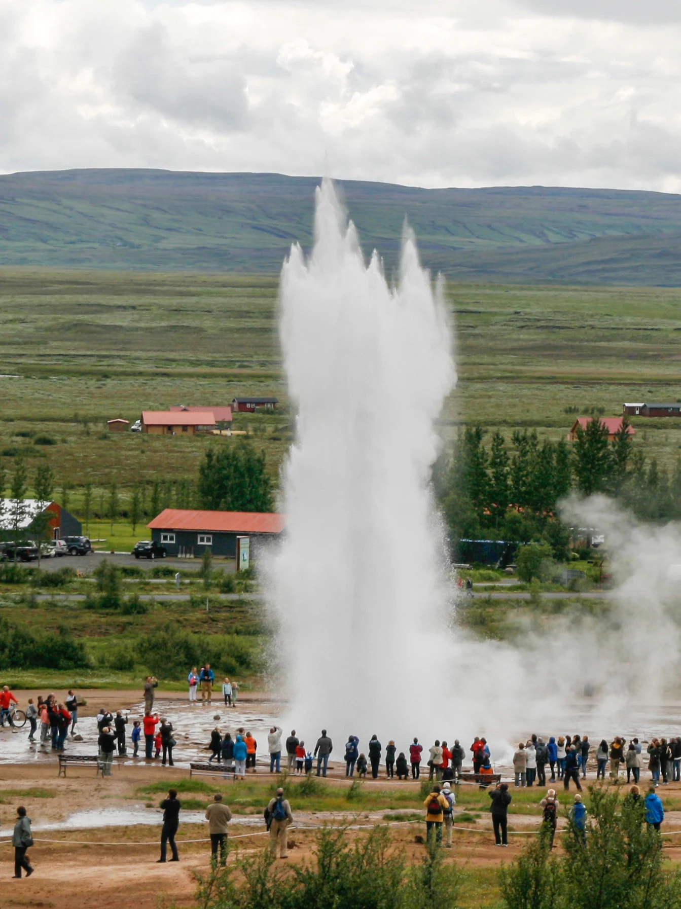
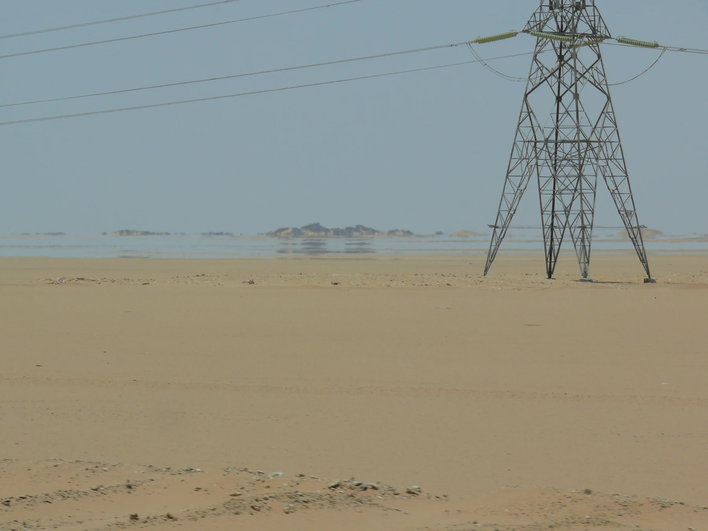
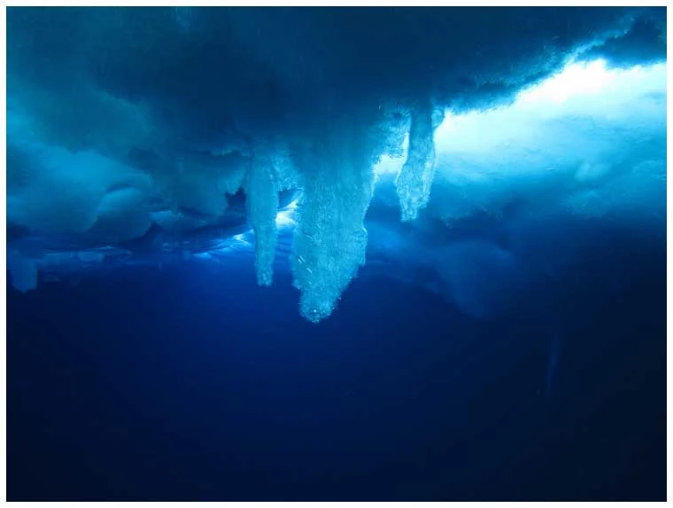
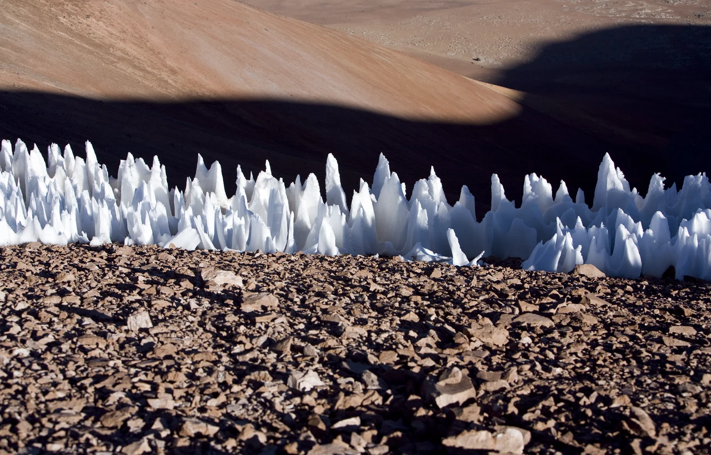
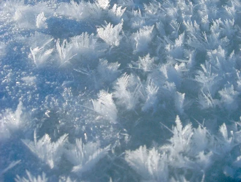

Теплопроводность
Энергия передаётся между частицами или соприкасающимися телами. Само вещество в целом не перемещается.
Снег сохраняет тепло почвы: воздух между снежинками плохо проводит тепло.
Почему вода вырывается из-под земли, воздух создаёт мираж, а лёд превращается в цветы?
За необычными пейзажами стоят знакомые законы. Проследим путь энергии: от нагревания до превращения вещества.
Начать исследование
При теплообмене энергия самопроизвольно переходит от более нагретого тела к менее нагретому. Температуры постепенно выравниваются.
Энергия передаётся между частицами или соприкасающимися телами. Само вещество в целом не перемещается.
Снег сохраняет тепло почвы: воздух между снежинками плохо проводит тепло.
Энергию переносят потоки жидкости или газа. Нагретая вода обычно расширяется, становится менее плотной и поднимается.
Так перемешивается вода при нагревании. В твёрдом теле конвекции нет.
Энергия переносится электромагнитными волнами. Для этого не требуется вещество: излучение проходит и через вакуум.
Солнце нагревает поверхность Земли. Ночью поверхность тоже отдаёт энергию излучением.
Температура и количество теплоты — разные величины. Температура характеризует тепловое состояние тела. Количество теплоты Q — энергия, переданная при теплообмене; её измеряют в джоулях.
При переходе между состояниями вода поглощает или отдаёт энергию. Не каждый такой переход сопровождается изменением температуры.
| Процесс | Переход | Энергия | В природе |
|---|---|---|---|
| Плавление | Лёд → вода | Поглощается | Таяние снега |
| Кристаллизация | Вода → лёд | Выделяется | Замерзание реки |
| Парообразование | Вода → пар | Поглощается | Испарение с поверхности озера |
| Конденсация | Пар → вода | Выделяется | Роса и капли тумана |
| Сублимация | Лёд → пар | Поглощается | Убыль снега без таяния |
| Десублимация | Пар → лёд | Выделяется | Рост инея |
Испарение ≠ кипение. Испарение идёт с поверхности жидкости при разных температурах. Кипение происходит по всему объёму с образованием пузырьков пара.
Белое облако — не сам водяной пар. Газообразный водяной пар невидим. Над горячей водой мы видим мелкие капли, образовавшиеся при конденсации.
Для каждого явления задайте три вопроса: откуда поступает энергия, как она передаётся и что происходит с веществом?
Здесь важен не только нагрев, но и давление.
Подземная вода получает энергию от горячих горных пород. Под давлением столба воды температура кипения выше, чем у поверхности.
Когда часть воды выходит наружу, давление в глубине падает. Часть горячей воды быстро превращается в пар, расширяется и выталкивает воду вверх.
После извержения подземные полости снова заполняются водой. На её нагрев и восстановление условий для следующего выброса нужно время.

Нагретая земля согревает нижний слой воздуха. Возникает разница температур, плотностей и показателей преломления.
Лучи света искривляются в неоднородном воздухе. При нижнем мираже к наблюдателю приходят лучи от неба, и кажется, будто впереди блестит вода.
Нет. Это реальное оптическое явление, которое можно сфотографировать. Тепловые процессы создают условия для преломления света.
Лёд может нарастать под водой, терять вещество под солнцем или образовываться прямо из пара. Похожие материалы — разные процессы.

Ледяная трубка, растущая вниз.
При замерзании морской воды большая часть соли остаётся в жидком рассоле. Он холоднее и плотнее окружающей воды, поэтому опускается.
Соль понижает температуру замерзания: рассол остаётся жидким и охлаждает менее солёную воду вокруг. Она замерзает, образуя трубку.
Главное: движение рассола + теплообмен + кристаллизация.
Эти острые лезвия встречаются в сухих высокогорьях. Их называют пенитентес.

Солнечное излучение вызывает неравномерную убыль снега. В сухом воздухе важна сублимация: лёд переходит сразу в пар.
Углубления получают дополнительное отражённое излучение и растут быстрее; в них возможно и таяние. Поэтому объяснять все формы только сублимацией было бы неточно.
Кристаллы без единого лепестка.
Над молодым льдом в тихую морозную погоду воздух у поверхности может быть насыщен влагой. Водяной пар осаждается на холодных кристаллах и превращается в лёд.
Это десублимация: переход из газа в твёрдое состояние. Ледяные цветы на морском льду не следует путать с ледяными лентами на стеблях растений.

Солнце поддерживает испарение. Водяной пар переносится воздушными потоками, а при конденсации отдаёт энергию окружающему воздуху.
Вода поглощает энергию и переходит в пар.
Воздушные потоки переносят водяной пар.
Образуются капли облаков, энергия выделяется.
Осадки и сток возвращают воду в водоёмы.
Круговорот переносит и воду, и энергию. Но его не стоит буквально считать тепловым двигателем: это сложная природная система, в которой участвуют солнечное излучение, теплообмен и сила тяжести.
Сначала определите процесс, затем выбирайте формулу. Во время фазового перехода подводимая энергия может расходоваться на изменение состояния вещества.
Q = cmΔt
c — удельная теплоёмкость,
m — масса, Δt — изменение температуры.
Q = λm
λ — удельная теплота плавления. Вещество уже должно быть нагрето до температуры плавления.
Q = Lm
L — удельная теплота парообразования при заданных условиях.
При обратных переходах выделяется такое же по модулю количество теплоты при тех же условиях. При охлаждении в формуле Q = cmΔt величина Δt отрицательна.
m = 0,2 кг; Δt = 50 − 20 = 30 °C; c = 4200 Дж/(кг·°C).
Q = 4200 · 0,2 · 30 = 25 200 Дж = 25,2 кДж.
Считаем, что вся переданная энергия идёт на нагрев воды; теплоёмкостью сосуда и потерями пренебрегаем.
Выберите по одному ответу. После проверки появится объяснение к каждому вопросу. Здесь можно ошибаться и пробовать снова.
Капля росы, тающий снег, туман над рекой. Выберите одно явление и объясните его через движение энергии и изменение состояния вещества.
Вернуться к началу ↑